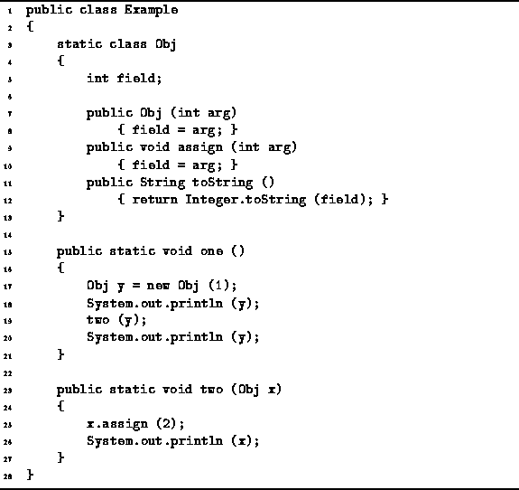

Data Structures and Algorithms
with Object-Oriented Design Patterns in Java
Data Structures and Algorithms
with Object-Oriented Design Patterns in Java
Consider the methods one and two defined in Program  .
In this case, the variables x and y are
reference types.
The type of x and y is Obj.
Thus, x and y both refer to instances of the Obj
class defined on lines 3-13.
.
In this case, the variables x and y are
reference types.
The type of x and y is Obj.
Thus, x and y both refer to instances of the Obj
class defined on lines 3-13.

Program: Parameter passing example: passing reference types.
The semantics of pass-by-value for reference types work like this: The effect of the formal parameter definition is to create a local variable of the specified type in the given method. For example, the method two has a local variable of type Obj called x. When the method is called, the actual parameters are assigned to the formal parameters before the body of the method is executed.
Since x and y are reference types,
when we assign y to x,
we make them both refer to the same instance of the Obj class.
Therefore, the output obtained produced by the method one
defined in Program is:
1 2 2
 Copyright © 1998 by Bruno R. Preiss, P.Eng. All rights reserved.
Copyright © 1998 by Bruno R. Preiss, P.Eng. All rights reserved.